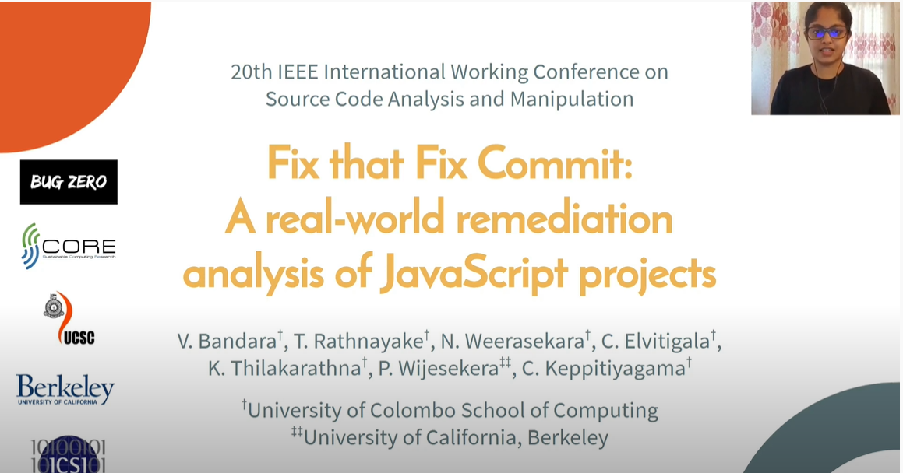
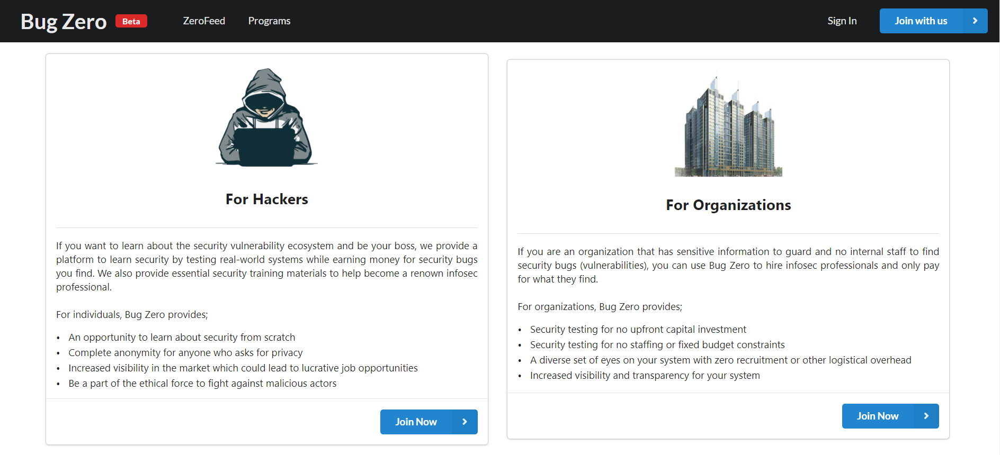

|
I am Currently working as a research assistant (PhD candidate) at IMDEA Networks Institute, Madrid, Spain supervised by Dr. Narseo VALLINA-RODRÍGUEZ. I recently concluded my studies at the University of Colombo School of Computing, Sri Lanka where I followed Bachelor of Science Honors in Information Systems and received the award for the 'Best Academic Performance in a 4 Year Degree'. Before joining IMDEA Networks I worked as a research assistant at SCoRe Lab,Sri Lanka mainly focusing on software security, secure development practices and vulnerability management practices of developers. Other than research i enjoy travelling, reading and dancing. During my internship as a security research intern at SCoRe Lab, I worked on research/projects focused on cryptocurrency and software security. Extending my interest in software security, my final year research focused on vulnerability remediation success in open-source projects. While working as an research intern at SCoRe Lab and during my final year research I had the oppotunity to work with Dr.Chamath Keppitiyagama, Dr. Primal Wijesekera and Mr.Kenneth Thilakarathna. At the moment I am continuing my research on vulnerability remediation while focusing on developer actions that cause introduction and distribution of vulnerabilities in the codebase. Recently I have been expanding my interest and the enthusiasm in Cybersecurity, into mobile security and privacy. The quaratine gave me time to follow a few courses and also go through papers regarding mobile app privacy and security. Email / Github / Google Scholar / LinkedIn / CV / Transcript |
{kind=link}
|
|
I am interested in research related to software security, vulnerability management, vulnerability remediation, secure software development and developer factors contributing to secure software and recently mobile and network security. |
![[Certificate of completion]](images/android_hacking_certificate.jpg){kind=link}

|
Published a demonstration on the Sequza tool and the continuation on the research in
CCS '21: Proceedings of the 2021 ACM SIGSAC Conference on Computer and Communications Security.
|
|  |
Vinuri Bandara,Thisura Rathnayake, Nipuna Weerasekara, Charitha Elvitigala,Kenneth Thilakarathna, Dr. Primal Wijesekera, Dr.Chamath Keppitiyagama IEEE 20th International Working Conference on Source Code Analysis and Manipulation (SCAM), 2020 A large-scale analysis on vulnerability remediation in open-source javascript projects, focusing on commits and developers responsible for introducing vulnerabilities into the codebase and fixing these vulnerabilities in the codebase. |
|  |
BugZero is a fully managed crowd powered bug bounty platforms. Bug Zero platform provides security testing services to the organizations with no upfront costs. With Bug Zero organizations can provide rewards to the security researchers as per their discretion for any vulnerability discovery |
|
|
|
Credits to Jon Barron. |